varies: a pulse travels at
varies: a pulse travels at  with group index
with group index  ; Sellmeier
; Sellmeier  and Cauchy
and Cauchy  fit real materials; absorption enters as
fit real materials; absorption enters as  ,
,  .
.Definition
Phase velocity
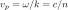
. A pulse is a packet of frequencies; its envelope moves at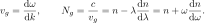
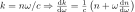
, and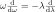
.Origin: Lorentz oscillator
Bound electrons as damped oscillators driven by  :
:
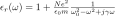
. Below resonance rises with
rises with  (normal dispersion); near
(normal dispersion); near 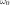
absorption peaks. Several resonances → Sellmeier (Malitson 1965). Real and imaginary parts are linked by Kramers–Kronig (causality).Worked example
Fused silica Sellmeier (
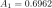
,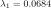
µm;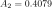
,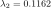
;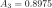
,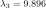
) at 1.55 µm: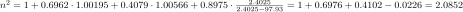
,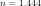
,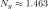
. Group delay 4.88 ns/m.Picture: phase and group index of silica (Sellmeier)
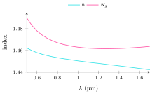
and group index 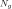
of fused silica from the Sellmeier equation; has its minimum near 1.3 µm, the zero of material dispersion.
has a minimum near 1.3 µm: there the group delay does not depend on  and the material dispersion
and the material dispersion
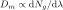
vanishes — the origin of the 1310 nm zero-dispersion window.Engineering applications
Pulse timing in fibres (
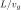
), chromatic dispersion and its compensation, prism compressors for ultrafast lasers, slow light in photonic crystals (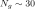
–100), group index of silicon waveguides (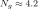
) which sets the free spectral range of ring resonators.Exam-style exercise
Using the silica Sellmeier curve: (a) and at 1.3 µm. (b) Phase and group delays over 1 km. (c) Material dispersion at 0.85, 1.3 and 1.55 µm.
Solution
(a)
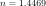
,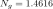
. (b)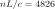
ns, ns: the pulse arrives 49 ns after a phase front would. (c)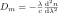
: ≈ −84, +3 and +22 ps/(nm km). Adding waveguide dispersion (≈ −5 ps/(nm km)) gives the standard fibre's zero at 1310 nm and 17 at 1550 nm (fibre dispersion).Pitfall
Group index can exceed, or (anomalous dispersion) fall below, the phase index; neither nor
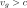
near absorption lines violates causality — signal velocity stays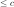
.